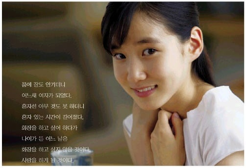

998년에 SBS의 드라마 <백야 3.98>로 데뷔했다. 본격적으로 알려지기 시작한 계기는 2005년 삼성생명의 TV 광고 <딸의 인생은 길다> 편이다.

당시 KBS N 스포츠에서 프로야구 경기 중계 중 공수교대시간에 이 광고가 자주 나와 디시인사이드 야갤러들이 이 광고에 주목하게 됐고, 이 시기 야갤에서 여신으로 추앙받고 있었다 카더라.
2020년 지금은 다른 의미로 야갤 여신이 되었다고 한다...
이 광고가 나왔던 초창기 때 '광고의 '브라걸'이 누구냐?'라는 얘기가 나와 야갤 내에서 '브라걸'로 통하기도 했다고 한다. 잡았다 요놈! 어린 소녀한테 잘들 하는 짓이다
아역부터 시작해서인지 다작배우이긴 하지만 성인이 되기 전까지는 주로 단역을 맡았다. 물론 아역 특성 상 비중있는 배역을 맡기 쉽지 않다. 다만 단역이라도, 어린 아이답지 않은 연기로 줄곧 호평을 받아왔다.
1998년 데뷔작 백야 3.98 출연은 너무 어릴 때라서 본인은 기억이 잘 나지 않는다고 한다. 2001년 명성황후에서 1대 세자빈을 맡았다. 세자역을 맡은 배우는 이민호.
2003년 사극 무인시대에서는 잔혹한 권력자 이의방의 딸로 등장하기도 했다. 2005년 엄포스를 탄생시킨 드라마 부활에서 서은하(한지민 분)의 아역을 맡았다.